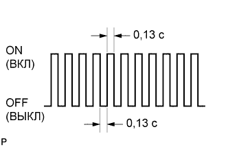

СИСТЕМА АВТОМАТИЧЕСКОЙ ТРАНСМИССИИ (для моделей с 1KD-FTV) > ПРОВЕДЕНИЕ АКТИВНОЙ ДИАГНОСТИКИ |
| ОПИСАНИЕ |
Режим активной диагностики характеризуется большей чувствительностью к неисправностям и позволяет обнаруживать неисправности, которые невозможно выявить в нормальном режиме. Кроме того, в режиме активной диагностики обнаруживаются все неисправности, которые могут быть найдены в нормальном режиме. Для регистрации DTC в режиме активной диагностики используется логика диагностирования за 1 поездку.
| ПРОВЕДЕНИЕ АКТИВНОЙ ДИАГНОСТИКИ |
Убедитесь, что выполняются следующие условия:
Положительное напряжение аккумуляторной батареи составляет не менее 11 В.
Дроссельная заслонка полностью закрыта.
Рычаг переключения передач в положении P или N.
Система кондиционирования выключена.
Подсоедините портативный диагностический прибор к DLC3.
Включите зажигание (IG).
Включите портативный диагностический прибор.
Войдите в следующие меню: Powertrain / ECT / Utility / Check Mode.
|  |
Удостоверьтесь, что контрольная лампа неисправности (MIL) мигает, как показано на рисунке.
Запустите двигатель. После запуска двигателя контрольная лампа MIL должна погаснуть.
Проверьте ECT в режиме контрольной поездки (Нажмите здесь) или воспроизведите условия неисправности, описанные клиентом.
После воспроизведения условий возникновения неисправности, используя портативный диагностический прибор проверьте DTC и данные фиксированного набора параметров.